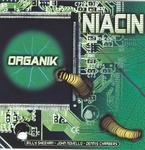

| Artist: | Niacin |
| Title: | Organik |
| Label: | Magna Carta MAX-9081-2 |
| Length(s): | 62 minutes |
| Year(s) of release: | 2005 |
| Month of review: | [03/2006] |
| 1) | Barbarian At The Gate | 2.57 |
| 2) | Nemesis | 4.00 |
| 3) | Blisterine | 5.33 |
| 4) | King Kong | 7.20 |
| 5) | Super Grande | 4.57 |
| 6) | Magnetic Mood | 6.39 |
| 7) | Hair Of The Dog | 4.18 |
| 8) | 4'5 3 | 4.17 |
| 9) | Stumble On The Truth | 3.48 |
| 10) | Club Soda | 4.31 |
| 11) | No Shame | 4.26 |
| 12) | Clean House | 4.21 |
| 13) | Footprints In The Sand (extra Special Bonus Track) | 4.31 |
Hey wait a minute, do I hear piano on Nemesis, played in percussive style no less? I can't remember anything like that on the previous albums. Blisterine opens with strong bass playing by Sheehan; he needs his solo spot in the sun too. I guess we hear the Rhodes here prominently beside the overactively played B3. You might even hear some of the key catch fire. As usual on this record we fade right into the follow-up, in this case a cover of Frank Zappa, King Kong. Niacin is not the first to cover the song of course. This is a very jazzy, and relatively light tune compared to the self penned ones. The piano plays an important role, and also Chambers keeps it light and cymbal rich.
Super Grande has a bit of a Spanish kick, which may be evident from the title. This is especially rhythmically, and the band plays it with flair. Then comes in a Hammond B3 that reminds most of Keith Emerson, but later we get more into the fuller sustained B3. The melody is excellent by the way, and it is not often that melodies in this type of music strike one. A real nice novelty, this song.
Magnetic Mood is a rather slow moving, rumbling blues styled track. The B3 takes the lead again here. Towards the end, the sound comes close to a meandering guitar, but we are still in key territory in Niacin. No guitars.
Hair Of The Dog is a bit of a disjointed starter, with weird effects on the organ. Then we turn totally for the orchestral! Very surprising. Soon we return to the off-and-on organ. It is almost as if Novello plays it by pressing the keys, but not quite. Halfway, we run into a rhythm section solo, after which we solo on in high pitch, wailingly. At the end, the orchestral, neo-classical elements return.
It is not easy to make out, but I think the next one is called 4'53, or maybe 4'5 3. Maybe this is a nod towards the John Cage composition? The band is certainly not quiet here, although they do keep it subdued at first. There is a certain optimism and positivity about the melodies on this song, although sometimes they plainly rock out. This is indeed a more typical song for the band, a bit like a live outing: meander, meander. Stumble On The Truth and Club Soda continue in the same vein, although the latter has a seventies funky grooviness, danceable even, but with some complex drum patterns.
On No Shame, the keys move into the direction of a horn section, while Sheehan rumbles on in the back. It seems, the band is trying to lift its own limitations in this way. At the end, we move into fusion territory, almost symphonic in a long fade out. Clean House is more bass dominated, although the B3 comes and takes over at some point of course. Still, the funky bass, is more in the lead than ever on this one, sometimes also heavy instead of funky.
Footprints In The Sand (extra special bonus track) features keyboards for the most part. This is a relaxed vibey tune at first, but the busy drum patterns and B3 do come in after a minute or so. Still, this is among the more symphonic tracks on this alubm, because of the additional keyboards.